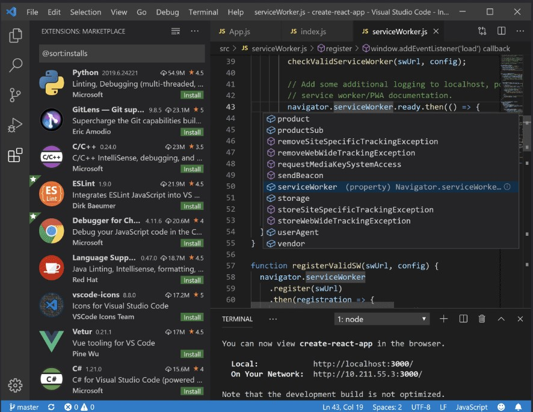

Code editing.
Redefined.
Free. Built on open source. Runs everywhere.
Web, Insiders edition, or other platforms
By using VS Code, you agree to its

Version 1.74 is now available! Read about the new features and fixes from November.
Free. Built on open source. Runs everywhere.
Web, Insiders edition, or other platforms
By using VS Code, you agree to its
IntelliSense
Run and Debug
Built-in Git
Extensions

@Una
VS code does so many things right. I m constantly impressed by the UX, and customizing workspace / user preferences is no exception. 🙌🏼💯 It just keeps getting better ❤️
@Una
VS code does so many things right. I m constantly impressed by the UX, and customizing workspace / user preferences is no exception. 🙌🏼💯 It just keeps getting better ❤️
@Una
VS code does so many things right. I m constantly impressed by the UX, and customizing workspace / user preferences is no exception. 🙌🏼💯 It just keeps getting better ❤️

Go beyond syntax highlighting and autocomplete with IntelliSense, which provides smart completions based on variable types, function definitions, and imported modules.

Debug code right from the editor. Launch or attach to your running apps and debug with break points, call stacks, and an interactive console.

Working with Git and other SCM providers has never been easier. Review diffs, stage files, and make commits right from the editor. Push and pull from any hosted SCM service.

Want even more features? Install extensions to add new languages, themes, debuggers, and to connect to additional services. Extensions run in separate processes, ensuring they won't slow down your editor. Learn more about extensions.

With Microsoft Azure you can deploy and host your React, Angular, Vue, Node, Python (and more!) sites, store and query relational and document based data, and scale with serverless computing, all with ease, all from within VS Code.